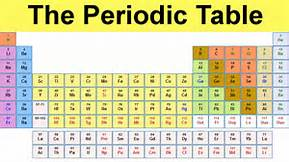
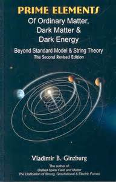

The Standard Model
The Standard Model explains how the basic building blocks of matter interact, governed by four fundamental forces.
The theories and discoveries of thousands of physicists since the 1930s have resulted in a remarkable insight into the fundamental structure of matter: everything in the universe is found to be made from a few basic building blocks called fundamental particles, governed by four fundamental forces. Our best understanding of how these particles and three of the forces are related to each other is encapsulated in the Standard Model of particle physics. Developed in the early 1970s, it has successfully explained almost all experimental results and precisely predicted a wide variety of phenomena. Over time and through many experiments, the Standard Model has become established as a well-tested physics theory.

periodic table
Matter particles
All matter around us is made of elementary particles, the building blocks of matter. These particles occur in two basic types called quarks and leptons. Each group consists of six particles, which are related in pairs, or “generations”. The lightest and most stable particles make up the first generation, whereas the heavier and less stable particles belong to the second and third generations. All stable matter in the universe is made from particles that belong to the first generation; any heavier particles quickly decay to the next most stable level. The six quarks are paired in the three generations – the “up quark” and the “down quark” form the first generation, followed by the “charm quark” and “strange quark”, then the “top quark” and “bottom (or beauty) quark”. Quarks also come in three different “colours” and only mix in such ways as to form colourless objects. The six leptons are similarly arranged in three generations – the “electron” and the “electron neutrino”, the “muon” and the “muon neutrino”, and the “tau” and the “tau neutrino”. The electron, the muon and the tau all have an electric charge and a sizeable mass, whereas the neutrinos are electrically neutral and have very little mass.

complex molecule
Forces and carrier particles
There are four fundamental forces at work in the universe:- the strong force
- the weak force
- the electromagnetic force
- the gravitational force
They work over different ranges and have different strengths. Gravity is the weakest but it has an infinite range. The electromagnetic force also has infinite range but it is many times stronger than gravity. The weak and strong forces are effective only over a very short range and dominate only at the level of subatomic particles. Despite its name, the weak force is much stronger than gravity but it is indeed the weakest of the other three. The strong force, as the name suggests, is the strongest of all four fundamental interactions. Three of the fundamental forces result from the exchange of force-carrier particles, which belong to a broader group called “bosons”. Particles of matter transfer discrete amounts of energy by exchanging bosons with each other. Each fundamental force has its own corresponding boson – the strong force is carried by the “gluon”, the electromagnetic force is carried by the “photon”, and the “W and Z bosons” are responsible for the weak force. Although not yet found, the “graviton” should be the corresponding force-carrying particle of gravity. The Standard Model includes the electromagnetic, strong and weak forces and all their carrier particles, and explains well how these forces act on all of the matter particles. However, the most familiar force in our everyday lives, gravity, is not part of the Standard Model, as fitting gravity comfortably into this framework has proved to be a difficult challenge. The quantum theory used to describe the micro world, and the general theory of relativity used to describe the macro world, are difficult to fit into a single framework. No one has managed to make the two mathematically compatible in the context of the Standard Model. But luckily for particle physics, when it comes to the minuscule scale of particles, the effect of gravity is so weak as to be negligible. Only when matter is in bulk, at the scale of the human body or of the planets for example, does the effect of gravity dominate. So the Standard Model still works well despite its reluctant exclusion of one of the fundamental forces.

four forces
So far so good, but...
...it is not time for physicists to call it a day just yet. Even though the Standard Model is currently the best description there is of the subatomic world, it does not explain the complete picture. The theory incorporates only three out of the four fundamental forces, omitting gravity. There are also important questions that it does not answer, such as “What is dark matter?”, or “What happened to the antimatter after the big bang?”, “Why are there three generations of quarks and leptons with such a different mass scale?” and more. Last but not least is a particle called the
Higgs boson, an essential component of the Standard Model. On 4 July 2012, the ATLAS and CMS experiments at CERN's Large Hadron Collider (LHC) announced they had each observed a new particle in the mass region around 126 GeV. This particle is consistent with the Higgs boson but it will take further work to determine whether or not it is the Higgs boson predicted by the Standard Model. The Higgs boson, as proposed within the Standard Model, is the simplest manifestation of the Brout-Englert-Higgs mechanism. Other types of Higgs bosons are predicted by other theories that go beyond the Standard Model.
On 8 October 2013 the Nobel prize in physics was awarded jointly to François Englert and Peter Higgs "for the theoretical discovery of a mechanism that contributes to our understanding of the origin of mass of subatomic particles, and which recently was confirmed through the discovery of the predicted fundamental particle, by the ATLAS and CMS experiments at CERN's Large Hadron Collider." So although the Standard Model accurately describes the phenomena within its domain, it is still incomplete. Perhaps it is only a part of a bigger picture that includes new physics hidden deep in the subatomic world or in the dark recesses of the universe. New information from experiments at the LHC will help us to find more of these missing pieces.